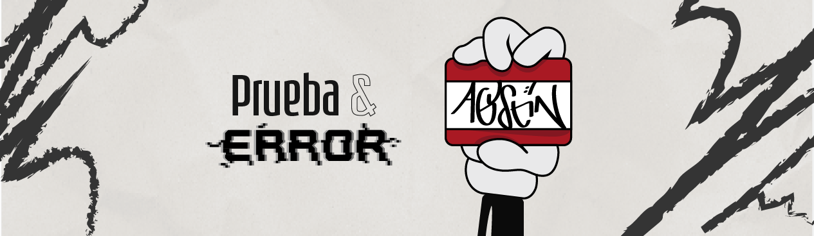
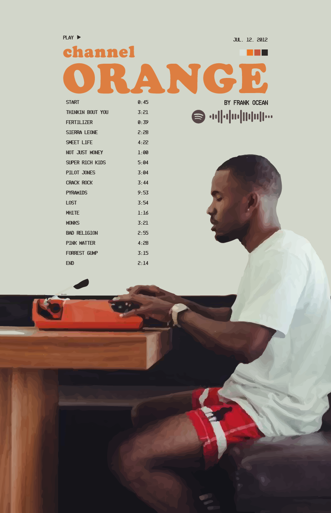
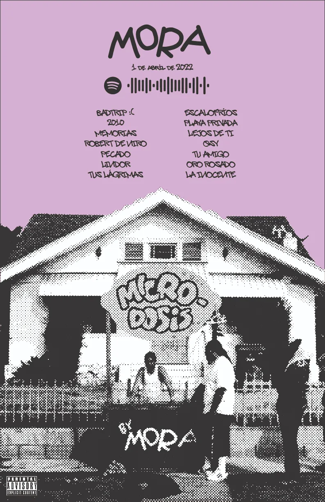
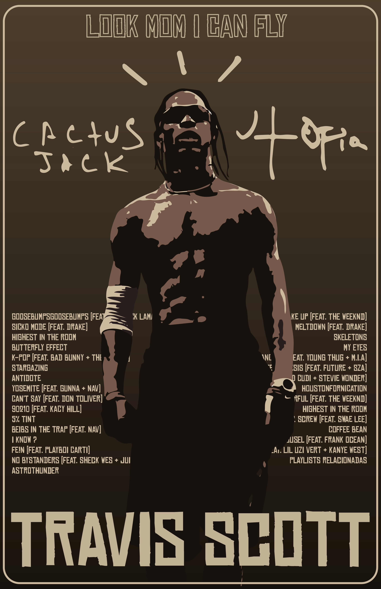
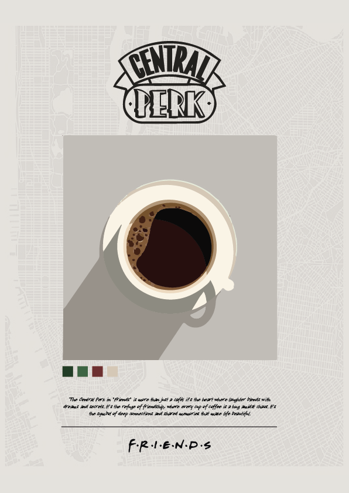
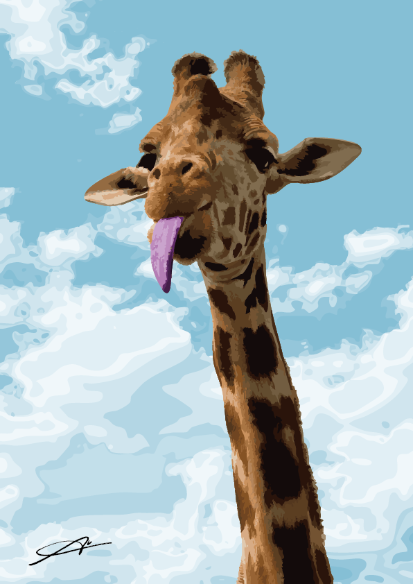
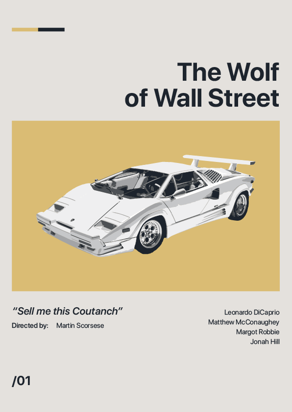
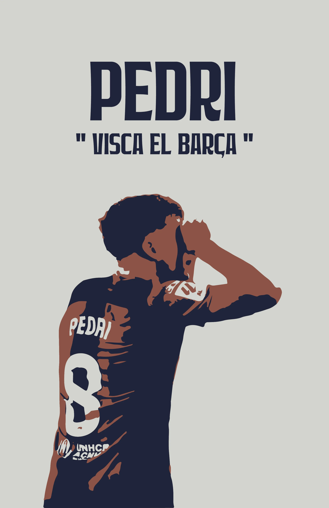
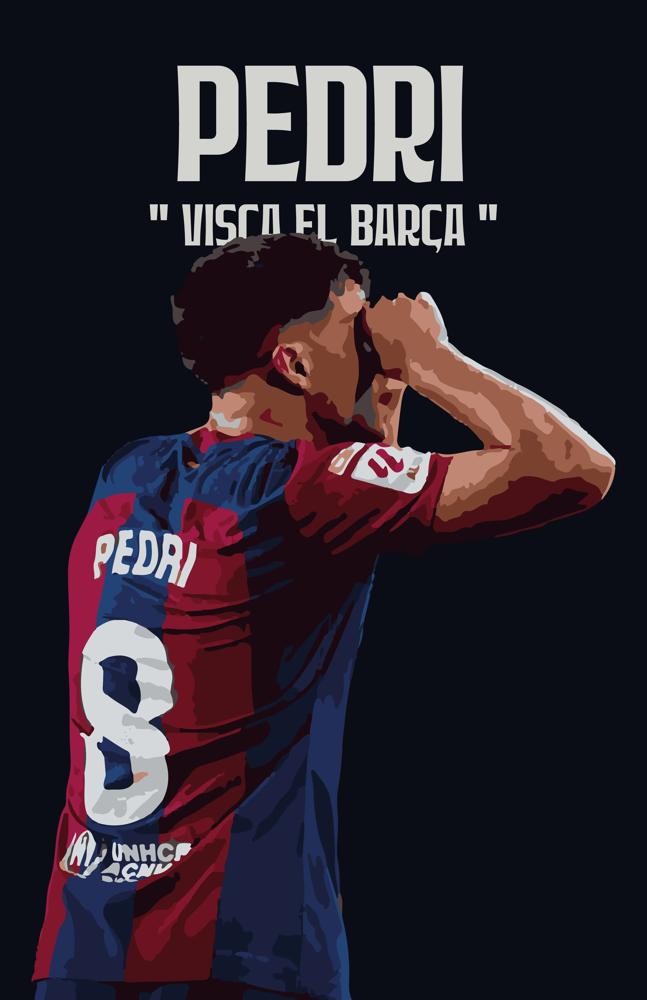
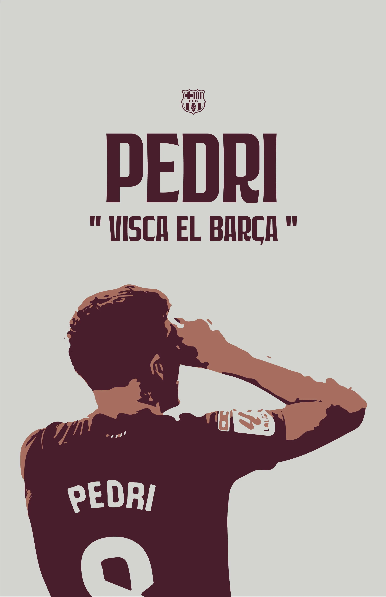

Exploraciones gráficas desarrolladas como ejercicio personal, inspiradas en música, cine y cultura visual contemporánea.

Diseños gráficos
por hobbie
2022–2025
Diseño gráfico e
ilustración digital
Illustrator, Photoshop
Este proyecto reúne una serie de posters creados como ejercicio libre, sin restricciones ni encargos formales. Cada pieza nace desde un interés personal: un disco, una película, una referencia estética o simplemente la necesidad de experimentar nuevas técnicas visuales.
A través de estas composiciones exploro color, textura, tipografía y fotografía como herramientas expresivas, probando estilos que van desde lo minimalista hasta lo más gestual y atmosférico. El objetivo es construir imágenes que transmitan carácter, narrativa y emoción, sin depender de una pauta predefinida.



Mi proceso parte siempre desde una referencia: un álbum que marcó una época, una escena icónica del cine o una estética visual que quiero reinterpretar. A partir de esto, desarrollo una composición donde combino recortes, ilustración digital, efectos halftone, orden editorial y decisiones tipográficas pensadas para que cada pieza tenga una identidad propia.
Estos posters funcionan como espacio de experimentación para probar ideas, soluciones visuales y lenguajes que luego influyen en mis proyectos profesionales.






El proyecto se convierte en una colección de afiches con estilos diversos, pero unidos por una misma intención: explorar y construir un lenguaje visual propio. Cada pieza es un ejercicio de libertad creativa, aprendizaje técnico y desarrollo gráfico.